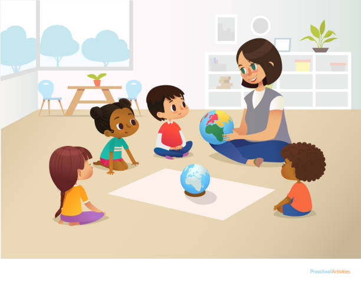

ESCUELA INFANTIL POMPITAS |
 |
|---|
ESCUELA INFANTIL POMPITAS |
|
|---|
Ven a conocernos |

En la escuelita, desde el principio, quisimos crear algo diferente, algo muy pero que muy personal. Si hay algo que nos define, es que ponemos el corazón en todas nuestras actividades, encuentros con familias , y rutinas diarias. Nuestro proyecto educativo está en constante evolución, atiende a metodologías activas pero principalmente es afectivo, cálido y respetuoso. Algunos pilares que definen nuestro proyecto educativo son:
¿Compartes nuestra manera de educar ? |